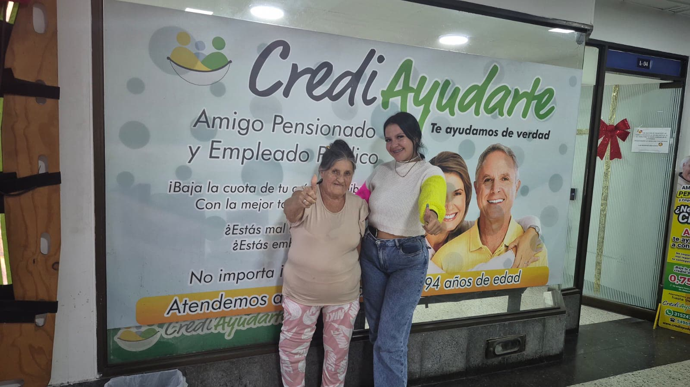
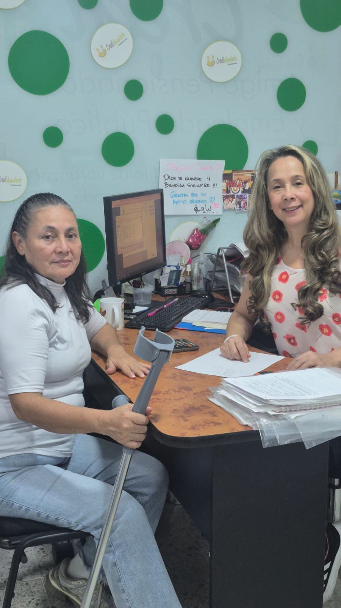
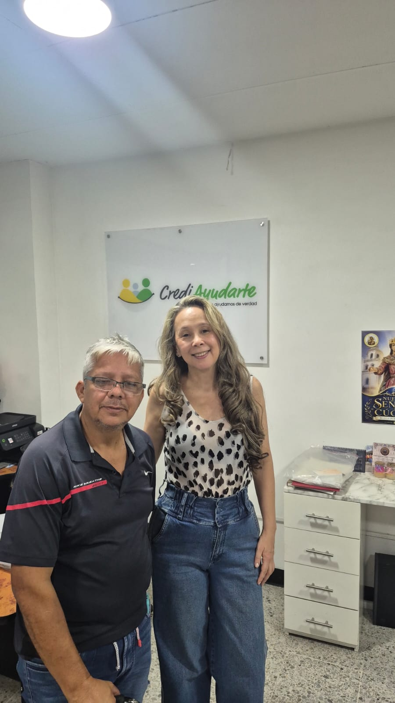

Asesoría en crédito de libranza · Colombia
Antes de
firmar,
revisa.
Lo que recibes,
lo que pagas,
lo que firmas.
No importa solo cuánto recibes. Importa cuánto pagas, durante cuánto tiempo y bajo qué condiciones.
Lo primero que ves no es todo.
Una decisión de crédito tiene más capas que una cuota o un desembolso.
- Lo que vesLa cuota
- Lo que no siempre vesEl plazo
- Lo que casi nadie miraEl costo total
Entender cambia la decisión.
Revisamos lo que recibes, lo que pagas y lo que todavía depende de terceros.
Revisión de tu caso
- Lo que recibes dinero neto
- Lo que pagas cuota, plazo y costo total
- Lo que depende de terceros entidad y pagaduría
Una decisión tiene más de una variable.
Antes de avanzar, hay que mirar el conjunto.
- Cuota
- Plazo
- Costo total
- Dinero neto
- Condiciones
Mira el panorama completo.
Una cuota más baja puede aliviar hoy y extender el compromiso durante más tiempo.
Cada perfil se revisa distinto.
No todos parten de las mismas condiciones.
Claridad antes de avanzar.
- No cobramos por adelantado.
- Los costos se explican antes de avanzar.
- La aprobación final depende de la entidad.
Que se pueda hacer no significa que convenga
Y si no te conviene, también te lo decimos.
Para quién trabajamos
Orientación según tu realidad.
Nos especializamos en el crédito de libranza del sector público en toda Colombia. Entra a la guía de tu perfil y mira qué cambia en tu caso.
Pensionados
Colpensiones, FOPEP, Fiduprevisora, CASUR, CREMIL y otras pagadurías compatibles.
Ver la guía 02 · Libranza paraDocentes públicos
Vinculados a las Secretarías de Educación municipales, distritales y departamentales.
Ver la guía 03 · Libranza paraEmpleados del gobierno
Alcaldías, gobernaciones, ministerios, Rama Judicial, DIAN, ICBF y más entidades.
Ver la guía 04 · Libranza paraFuerza Pública
Policía, Ejército, Armada y Fuerza Aérea, en actividad o pensionados.
Ver la guíaTambién te puede servir: cómo funciona un crédito de libranza, compra de cartera, libranza si estás reportado y nuestra oficina de Cúcuta.
Testimonios reales
Personas reales de Norte de Santander, alivio real.
Pensionados y empleados del gobierno de Cúcuta y de todo Norte de Santander que tramitaron su crédito de libranza con nosotros. Fotos y videos tomados en nuestra oficina, con su permiso.
9años
resolviendo casos como el tuyo
Nuestra oficina Calle 12 # 4–47, Local 4 · C.C. International, Cúcuta
Ver testimonios en fotos y video


Cómo funciona
Una conversación honesta, un análisis que te dice la verdad.
-
01
Nos cuentas tu caso
Nos escribes por WhatsApp o llenas una solicitud corta. Sin formularios largos.
Sin datos sensibles en frío -
02
Lo revisamos
Revisamos tu perfil y tu pagaduría. Cuando corresponda, te pedimos un desprendible legible.
Preanálisis sin costo -
03
Te explicamos
Te mostramos costos, plazo y consecuencias en palabras claras, sin letra menuda.
Costo total, no solo la cuota -
04
Tú decides
La decisión es tuya. Si te conviene, te acompañamos hasta el final; si no, te lo decimos.
Sin presión para firmar
El Código CrediAyudarte
Si no te conviene, te lo decimos.
CrediAyudarte es una asesoría independiente especializada en crédito de libranza para pensionados y empleados públicos en Colombia. No somos un banco ni una cooperativa: no aprobamos ni desembolsamos créditos. Gestionamos alternativas con entidades que puedan atender tu caso y revisamos si el crédito realmente te conviene antes de que firmes.
No competimos por la tasa más baja ni por el desembolso más rápido. Lideramos algo más importante: decisiones financieras conscientes.
- No cobramos por adelantado.
- Los costos se explican antes de avanzar.
- La aprobación final depende de la entidad.
- Tú decides.
Preguntas frecuentes
Preguntas sobre el crédito de libranza, resueltas con transparencia.
No. Somos una asesoría financiera independiente. No somos un banco ni desembolsamos dinero: analizamos tu caso, identificamos entidades con opciones compatibles con tu perfil y pagaduría, y te acompañamos. La aprobación final siempre la define la entidad.
El preanálisis se hace sin costo y sin compromiso. Si una gestión tuviera costos u honorarios, te los explicamos con claridad antes de que decidas avanzar.
Nunca. No pedimos anticipos, seguros anticipados ni pagos que condicionen un desembolso. Si alguien lo hace en nuestro nombre, desconfía y avísanos.
No. Nadie serio puede garantizarte una aprobación. La decisión depende de tu perfil, pagaduría, capacidad, reporte y las políticas de cada entidad. Te decimos con honestidad qué tan viable se ve tu caso.
En muchos casos sí, pero depende de tu perfil, tu pagaduría, el tipo de reporte y las políticas de la entidad. Revisamos tu caso con honestidad; lo que nunca hacemos es prometerte un resultado que no está asegurado.
Es un crédito cuya cuota se descuenta directamente de tu nómina o pensión. Suele tener condiciones más ordenadas, pero igual conviene revisar plazo, costo total y descuentos antes de decidir.
Para pensionados, docentes del estado, empleados del gobierno y miembros de la Fuerza Pública. Es el sector que conocemos a fondo y donde podemos orientarte mejor.
Solo lo necesario para orientarte, como tu pagaduría o entidad y tu situación general. No pedimos número de cédula, fecha de nacimiento, cuentas bancarias ni claves en el primer contacto.
Sí. Pedimos solo lo indispensable y no compartimos tu información con terceros ajenos al proceso. Los datos sensibles, si algún día se requieren, los gestiona el equipo humano en el momento adecuado.
No siempre. Puede ser útil, pero también puede alargar la deuda o subir el costo total. Por eso la comparamos contra otras opciones: plazo, costo total, liquidez real y cuota.
Depende de la entidad, tu pagaduría, los documentos y las validaciones. Por eso no manejamos tiempos como promesa. Te contamos de forma realista en qué va tu caso.
La pagaduría es la entidad que te paga la pensión o la nómina. Es clave porque define qué opciones y qué entidades son compatibles con tu perfil.
Es tu comprobante de pago de pensión o nómina. Cuando corresponda, te pediremos una foto o PDF legible para revisar tu caso con precisión. Solo lo pedimos en el momento adecuado.
Algunos casos con embargo tienen opciones, pero requieren revisión con restricciones, especialmente los embargos de alimentos o familia. No prometemos resultado; lo revisamos con honestidad.
A veces sí, pero recuerda: una cuota más baja no siempre es un mejor crédito si te agregan años de deuda. Revisamos si realmente te deja mejor después de costos y plazo.
Te ayudamos a mirar el panorama completo: cuota, plazo, costo total y descuentos. Lo importante no es solo cuánto recibes, sino cuánto pagas y por cuánto tiempo.
Tenemos oficina en Cúcuta y atendemos a todo el país de forma virtual por WhatsApp. Si estás en otra ciudad, te atendemos virtualmente. Escríbenos y coordinamos.
No es obligatorio. La mayor parte de la atención es virtual por WhatsApp. Si estás en Cúcuta y prefieres, podemos coordinar atención presencial.
Nuestro foco es el sector público. Si es tu caso, te orientamos de forma transparente y, cuando aplica, revisamos si un familiar pensionado o empleado del gobierno puede ser el titular.
Te orientamos, entendemos tu perfil y, cuando corresponde, hacemos el preanálisis. Con eso te decimos si vale la pena avanzar o si es mejor no hacerlo porque no te conviene.
Lo primero es consultar tu historial en las centrales de riesgo (Datacrédito y TransUnion): ahí ves quién te reportó, por qué monto y desde cuándo. A veces el reporte ya no corresponde a la realidad: la deuda se pagó, el descuento sí se hizo por nómina pero la entidad no lo aplicó, o hay un error de reporte. Escríbenos y lo revisamos contigo con calma. Lo que nunca vamos a hacer es prometerte que te borramos un reporte: eso no lo hace nadie serio.
Cada entidad tiene sus propias políticas, así que no existe una lista única que valga para todos. En general se parte de tu documento de identidad, de un desprendible de pago legible y de que tu pagaduría tenga convenio con la entidad. A partir de ahí pesan tu edad, tu capacidad de descuento y tu reporte. Antes de pedirte documentos revisamos si tu caso tiene sentido; si no lo tiene, te lo decimos y te ahorramos el trámite.
Sí. Acompañamos a docentes vinculados a las Secretarías de Educación municipales, distritales y departamentales, incluidos quienes reciben su pago a través de Fiduprevisora. Revisamos tu vinculación, tus descuentos actuales y qué entidades tienen convenio con tu pagaduría. Si ya tienes libranzas activas, miramos si de verdad te queda espacio o si es mejor esperar; si no te conviene, también te lo decimos.
Sí. Atendemos a personal de Policía, Ejército, Armada y Fuerza Aérea, tanto en actividad como pensionados, incluidas pagadurías como CASUR y CREMIL. Como en cualquier otro caso, primero miramos tu perfil y tus descuentos, y te explicamos el costo real antes de que firmes nada. No prometemos aprobaciones: esa decisión siempre es de la entidad.
Sí. Nuestra oficina está en Cúcuta, pero atendemos de forma virtual por WhatsApp a personas de Villa del Rosario, Los Patios, Pamplona, Ocaña y del resto de Norte de Santander, y también del resto del país. No necesitas desplazarte: todo el acompañamiento puede hacerse por WhatsApp y, si prefieres venir a la oficina, coordinamos la visita.
¿Te quedó alguna duda? Mira cómo funciona el crédito de libranza paso a paso, lee los testimonios de pensionados atendidos en nuestra oficina de Cúcuta o pasa directo a solicitar tu crédito por libranza sin anticipos.
Antes de firmar, revisa.
Cuéntanos tu caso y revisamos contigo qué debes tener en cuenta antes de decidir.
Solicita tu análisis